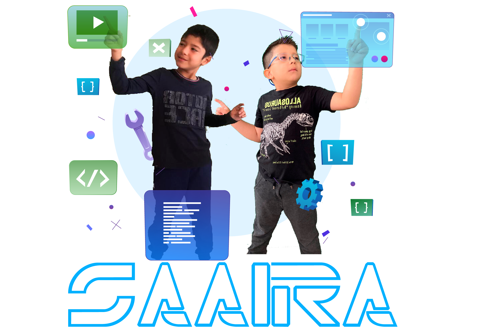

Sistema de Apoyo de Aprendizaje Inicial con Realidad Aumentada - SAAIRA

INSTRUCCIONES
1. Descarga e imprime los siguientes patrones: ARCHIVO
2. Permite al navegador poder acceder a la cámara web de tu móvil o computador.
3. Escanea los diferentes patrones y aprende sobre: figuras, animales y colores.
4. Diviértete aprendiendo con nuestra aplicación.
PROYECTO INFOMATRIX 2021
Autores: David Alejandro Corral Catota y Angel Roberto Jaramillo Vera
Asesor: Alejandro Espinosa
Institución: Colegio Gutenberg Schule
Visita nuestro video en Youtube para conocer más sobre nuestro proyecto: